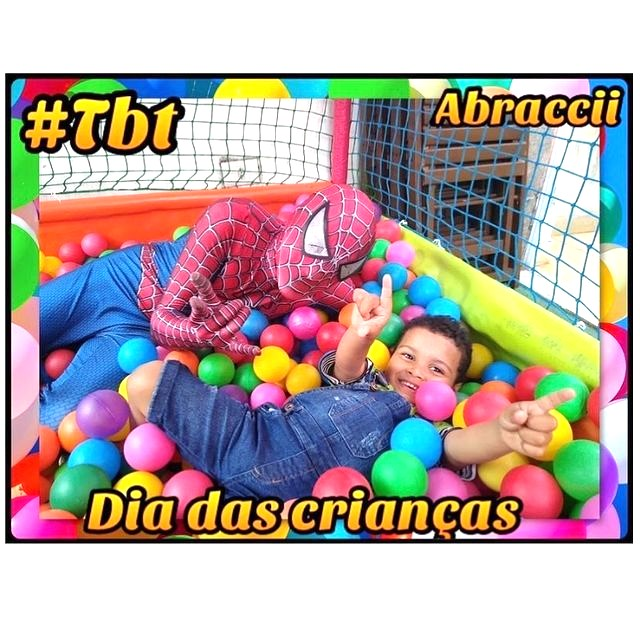
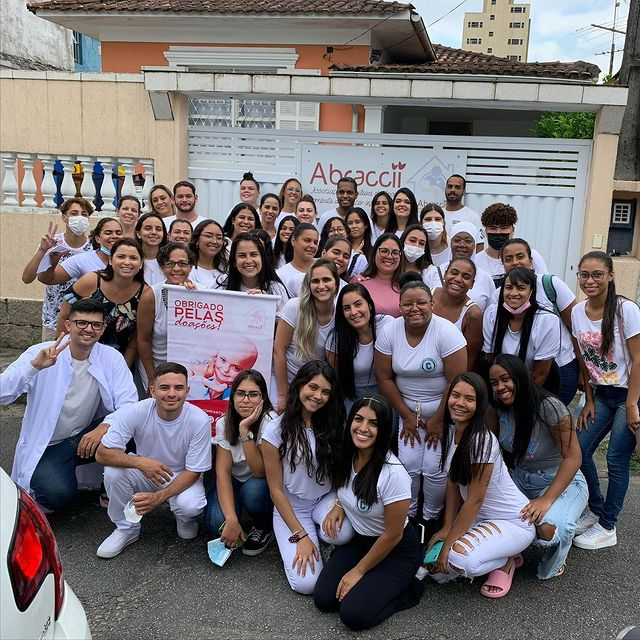
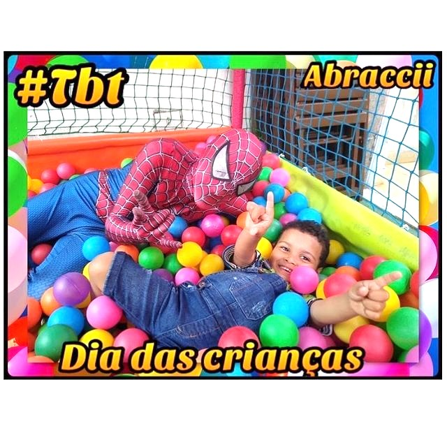
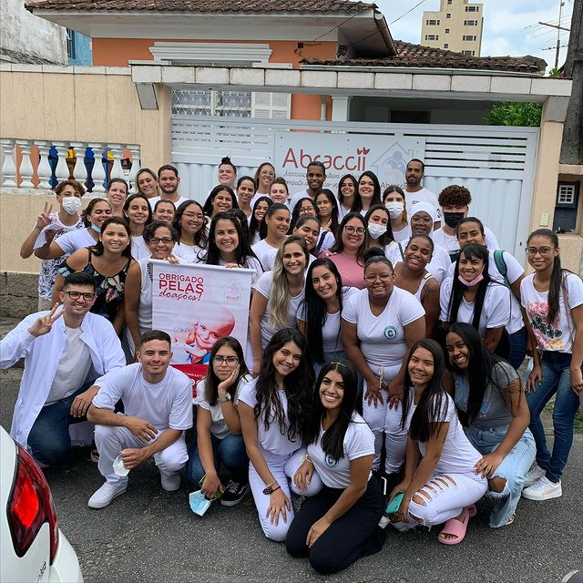

A Instituição
A Abraccii (Associação Brasileira de Apoio e Combate ao Câncer Infanto-juvenil) é uma Instituição sem fins lucrativos que apoia crianças e adolescentes, de 0 à 18 anos de idade, portadoras de câncer, prestando assistência através de doações de cestas básicas, medicamentos e suplementos; proporcionando o aumento da expectativa de vida das crianças com câncer do Litoral Paulista.
Está localizada na cidade de Santos, na Baixada Santista, em São Paulo.
"Temos conhecimento que algumas crianças e adolescentes com câncer precisam viajar grandes distâncias para receber atendimento médico especializado, algumas mães que precisam acompanhar o tratamento dos PEQUENOS GUERREIROS, por conta das dificuldades estruturais e principalmente financeiras até desistem do tratamento." Tendo esta preocupação como ponto de partida, a realização deste valioso projeto, foram visitadas algumas casas de apoio e hospedagem conceituadas e classificadas como padrão de referência, localizadas em São Paulo (capital) dentre elas: a Casa Ronald, a Casa Hope e a Casa Ninho.
![Na imagem, tirada no quintal da Abraccii em um evento, possui um grupo de 8 crianças acompanhadas por 3 adultos fantasiadas dos super-heróis Homem-Aranha, Mulher Maravilha e Thor. Uma das crianças está no colo da pessoa fantasiada de Homem-Aranha e toca em seu rosto, as outras estão no chão fazendo poses características dos personagens. No fundo tem uma parede branca com a frase 'Feliz Dia das Crianças' escrita com letras coloridas. Todos estão com expressões felizes. Uma margem colorida aparece ao redor da imagem com as letras 'TBT' no canto superior direito.](img/tbt1.jpg) 



![Na imagem, registrada no quintal da Abraccii, aparecem cerca de 15 pessoas, entre crianças e responsáveis. A maioria está usando máscara no rosto, e todos estão posando felizes para a foto. No cenário há um escorregador, onde se encontra, na parte superior, uma criança abraçada a um urso de pelúcia branco, enquanto a parte inferior está sendo usada como apoio para outros 4 dos participantes da imagem. No centro há um banner referente ao evento acontecido nesse dia, e no fundo aparecem as janelas e paredes da ONG. É um dia de sol com céu claro.](img/evento.png)